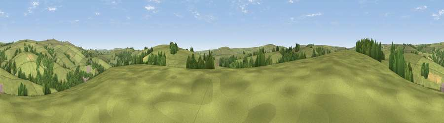

Viewpoint near Exford
#33504 in England · top 70% of its area beats it · near ExfordThe view, rendered

A 360° render of this exact spot computed from the terrain model, tree cover and land cover — summer colours, afternoon light, calibrated against photographs of famous viewpoints. Real trees, hedges and buildings will differ in detail.
The panorama
Grey silhouette: terrain skyline in each direction (720 bearings, Earth curvature and refraction included). Dashed green: skyline with trees (+15 m) and buildings (+8 m) as obstacles. Blue strip: how far the ground is visible on each bearing.
Where the view opens
Wedge length = distance to the farthest visible ground on that bearing (vegetation-aware). Rings at 10, 25 and 50 km.
What fills the view
85% grassland · 12% woodland · 2% cropland
Angular shares of the visible panorama (visual magnitude), not map area. Landscape diversity 0.22 (0–1 Shannon).
Key numbers
More beautiful places nearby
The staircase of upgrades: each row has a higher view potential than everything closer. Driving times are estimates from straight-line distance, calibrated against real road routing — check an actual route before setting out.
| Place | Direction | Drive | Score |
|---|---|---|---|
| Viewpoint near Exford | NE · 3 km | ~7 min | 50.1 |
| Lyncombe Hill | ESE · 3 km | ~8 min | 52.8 |
| Withypool Common | SW · 4 km | ~9 min | 60.0 |
| Little Hill | N · 5 km | ~11 min | 61.4 |
| Winsford Hill | SE · 5 km | ~11 min | 66.0 |
| Viewpoint near Exford | NE · 5 km | ~11 min | 77.1 |
| Viewpoint near Luccombe | NE · 6 km | ~13 min | 84.5 |
| Viewpoint near Luccombe | NE · 8 km | ~17 min | 84.6 |
51.12930, -3.65663 · source: screening · position refined by local search. Computed location — check access rights before visiting.